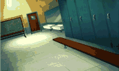

With all the attention being paid to the animated characters of Space Jam, one could easily forget the lovely backgrounds that were rendered for the animated sequences. Click on any thumbnail image below to see a larger version of the scene.

© 1996 Warner Bros.